Chapter14. Reinforcement Learning¶
强化学习（Reinforcement Learning，RL）处理的是这样一类问题：
- 给定输入以后，最佳输出未知
- 机器通过与环境互动得到奖励（reward）
- 目标不是拟合某个标准答案，而是让长期获得的奖励总和最大
与监督学习相比：
- 监督学习：给定输入 \(x\)，训练数据直接告诉模型标准答案 \(y\)
- 强化学习：给定观测 \(s\)，模型需要自己尝试动作 \(a\)，再通过环境反馈判断动作好坏
14.1 Basic Concepts¶
强化学习的核心结构包含两个对象：
- 智能体（agent / actor）：根据环境给出的观测决定动作
- 环境（environment）：接收智能体的动作，更新状态，并给出新的观测与奖励
How it works
- 基本互动流程：
- Environment 给出 observation
- Actor 根据 observation 做出 action
- Environment 根据 action 发生改变
- Environment 给出 reward，作为 action 好坏的反馈
- 最终目标：Find an actor maximizing expected reward.
Applications¶
强化学习常见应用包括：
- 玩电子游戏
- Observation：游戏画面
- Action：左移、右移、开火等操作
- Reward：游戏分数
- Return：一整局游戏得到的总分
- 下围棋
- Observation：棋盘上黑子和白子的位置
- Action：下一步落子位置
- Reward：通常只有终局才有奖励，赢为 \(+1\)，输为 \(-1\)
Note
围棋这类任务的奖励非常稀疏（sparse reward），中间动作大多没有即时反馈，因此需要更好的评价方法、价值网络或启发式设计。
14.2 RL Framework¶
强化学习也可以套进机器学习的三步框架：
- Define a function with unknown parameters
- Define loss
- Optimization
区别在于：强化学习的资料不是一开始固定好的，而是智能体在训练过程中不断与环境互动收集来的。
14.2.1 Step1: Function with Unknown¶
在强化学习里面，Actor 通常是一个网络，称为 策略网络（policy network）
- Input：环境给出的 observation，可以是向量、矩阵或游戏画面
- 如果输入是图像，可以用 CNN；
- 如果需要考虑过去一段时间的观测序列，可以用 RNN 或 Transformer
- Output：每个动作对应一个分数或概率
- Parameters：策略网络参数 \(\theta\)
策略网络不会总是选择分数最高的动作，而是把输出看成一个概率分布，再根据概率随机采样：
- 这样可以让同一状态下的动作带有随机性
- 随机性有助于探索（exploration）
- 如果永远选择当前最优动作，可能永远尝试不到更好的动作
14.2.2 Step2: Define Loss¶
强化学习中的两个概念：
- 奖励（reward）：某一步动作立即得到的反馈，记作 \(r_t\)
- 回报（return）：一整个 episode 中所有奖励的总和
从游戏开始到结束的完整互动过程称为回合（episode），若一场游戏互动 \(T\) 次，则回报可写为：
- 训练目标是让回报越大越好。若想写成“最小化损失”的形式，可以把负回报当作损失
14.2.3 Step3: Optimization¶
在一场游戏中，把状态和动作组合起来得到的序列称为 轨迹（trajectory）：
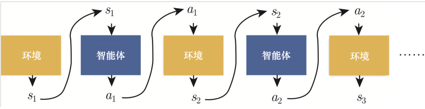
轨迹的总回报为：
- 强化学习的优化目标是找到一组参数 \(\theta\)，通过梯度上升（gradient ascent）最大化回报。
困难在于：
- Actor 的动作通常来自随机采样，同一个 \(s_t\) 不一定产生同一个 \(a_t\)
- Environment 和 reward 可能是黑盒，不一定可微
- 同一个动作在不同智能体或不同阶段下，好坏可能不同
因此不能像普通监督学习一样，直接对环境和奖励做端到端反向传播。
14.3 Policy Gradient¶
把 Actor 在某个状态下采取某个动作看成一个分类问题：
- 输入：状态 \(s\)
- 标签：动作 \(a\)
- 损失：策略网络输出与目标动作之间的交叉熵 \(e\)
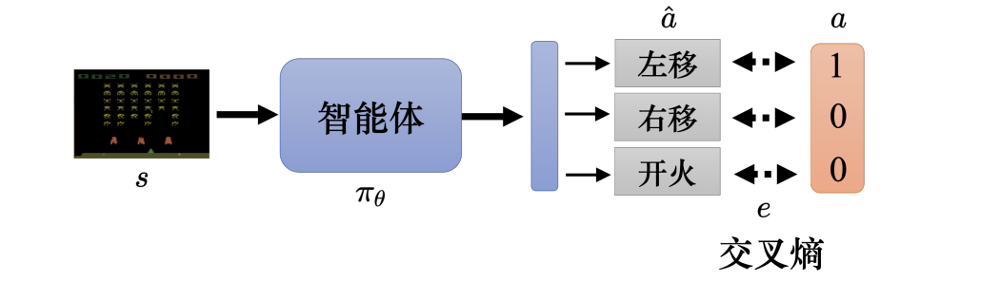
如果希望 Actor 在状态 \(s\) 下采取动作 \(a\)，就最小化交叉熵：
如果希望 Actor 不采取动作 \(a\)，就最大化交叉熵，等价于最小化负交叉熵：
更一般地，每一个 state-action pair 都可以配一个分数 \(A_n\)，表示这个动作在该状态下的好坏程度：
其中：
- \(A_n>0\)：希望模型更倾向于采取这个动作
- \(A_n<0\)：希望模型更不倾向于采取这个动作
- \(|A_n|\) 越大，更新力度越强
接下来的关键问题就是：如何定义 \(A\)。
14.4 Evaluating Actions¶
14.4.1 Immediate Reward¶
最直观的做法是直接用即时奖励评价动作：
- 如果 \(r_t>0\)，说明动作好；如果 \(r_t<0\)，说明动作不好。
但这个版本太短视：
- 一个动作可能当下没有奖励，但会为未来奖励做准备
- 一个动作可能当下有奖励，但长期看会导致坏结果
Delayed reward：为了长期收益，智能体可能需要先执行一些暂时没有奖励的动作。
14.4.2 Cumulative Reward¶
为了考虑长期影响，可以把从时间点 \(t\) 开始的未来奖励全部加起来：
例如：
此时令：
这样，某个动作虽然没有即时奖励，但只要它帮助后续拿到高分，也会被视为好动作。
14.4.3 Discounted Cumulative Reward¶
把很久以后的奖励全部归功于当前动作也不合理，因此加入 折扣因子（discount factor） \(\gamma\)：
展开为：
其中 \(0<\gamma<1\)，常见取值如 \(0.9\) 或 \(0.99\)
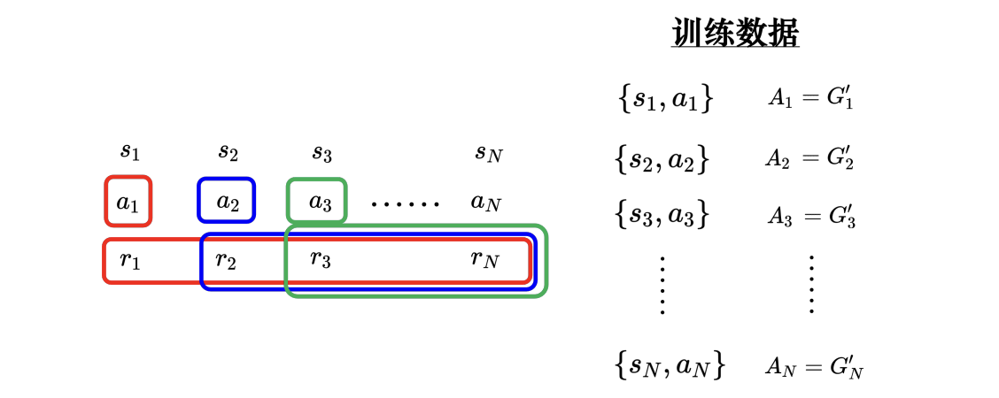
直观理解：
- 越接近当前动作的奖励，权重越大
- 越远的未来奖励，权重越小
- \(\gamma\) 越大，模型越重视长期收益
14.4.4 Discounted Reward Minus Baseline¶
Bug
只用 \(G'_t\) 还有一个问题：如果所有动作的回报都是正的，模型会鼓励所有动作，即使某些动作相对来说很差。
因此可以减去一个 基线（baseline） \(b\)：\(A_t=G'_t-b\)
- 高于平均水平的动作得到正评价；低于平均水平的动作得到负评价，更新会更稳定
策略梯度的大致流程：
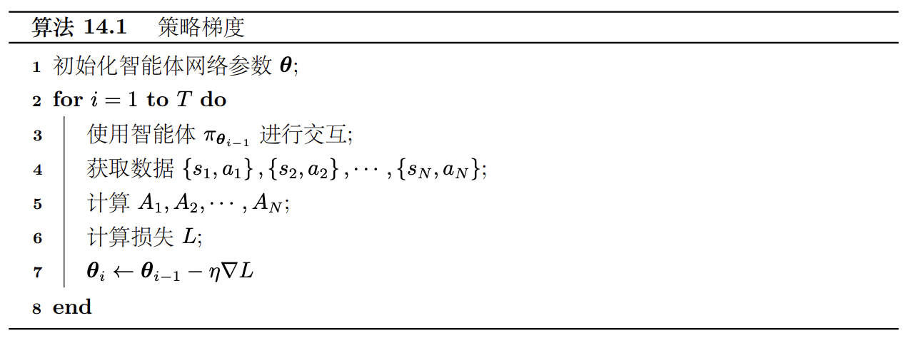
Tip
强化学习耗时的一个关键原因是：每更新一次策略，旧策略收集的数据就可能不再适合新策略，因此需要重新和环境互动收集数据。
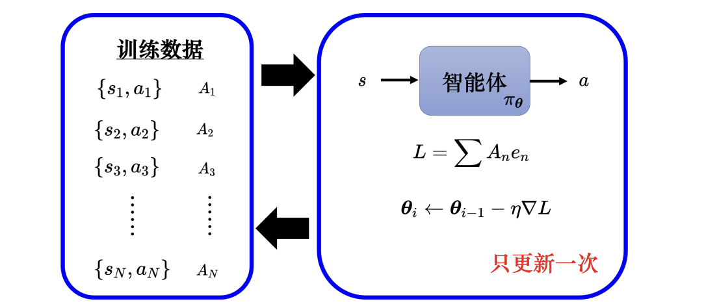
14.5 On-policy, Off-policy and Exploration¶
强化学习非常耗时
- 如果收集数据的智能体跟被训练的智能体是同一个智能体，当智能体更新以后，就要重新去收集数据，，异策略学习（off-policy learning）可以解决该问题。
- 由于 \(\pi_{\theta_i}\) 跟 \(\pi_{\theta_{i-1}}\) 收集的数据不同，不能使用 \(\pi_{\theta_{i-1}}\) 的收集数据来评估 \(\pi_{\theta_i}\) 接下来会得到的奖励
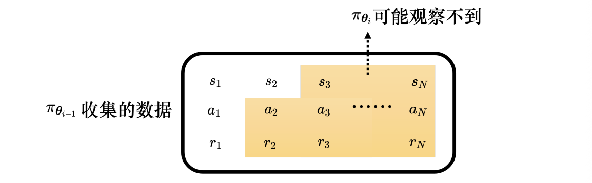
On-policy Learning¶
同策略学习（on-policy learning）：与环境互动、收集数据的智能体，就是正在被训练的智能体。
策略梯度就是 on-policy 方法：
- 用 \(\pi_{\theta_{i-1}}\) 收集数据 \(\rightarrow\) 用这些数据更新 \(\pi_{\theta_{i-1}}\) \(\rightarrow\) 更新后得到新策略 \(\pi_{\theta_i}\) \(\rightarrow\) 再重新收集数据
- 缺点是样本效率低，训练很花时间。
Off-policy Learning¶
异策略学习（off-policy learning）：与环境互动的智能体和正在训练的智能体可以不同
- 旧数据可以反复使用
- 不必每更新一次参数就重新采样
- 样本效率通常更高
Exploration¶
探索（exploration）非常重要，如果某个动作从未被尝试过，就无法知道它到底好不好。
- 常见增强探索的方法：
- 使用随机采样，而不是总选概率最大的动作
- 增大策略输出分布的熵（entropy）
- 在参数或动作上加入噪声
Tip
强化学习训练好不好，和采样质量关系很大。探索不足时，模型可能很早卡在一个局部策略里。
14.6 Actor-Critic¶
Actor-Critic 把强化学习拆成两个网络：
- Actor：策略网络，决定要采取什么动作
- Critic：价值网络，评价当前状态或状态-动作对的好坏
Critic 也称为价值函数（value function），可以用 \(V^{\pi_\theta}(s)\) 来表示 - 它表示在策略 \(\pi_\theta\) 下，智能体看到状态 \(s\) 后，未来能得到的折扣累积奖励的期望 \(G''\)
- 价值函数与观察的智能体（actor）以及环境状态有关
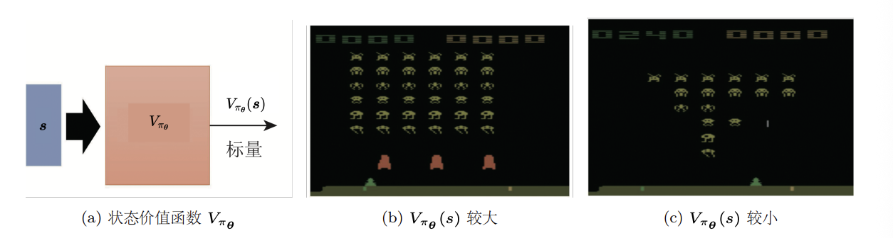
下面介绍 Critic 的两种常用的训练方法
Monte Carlo¶
蒙特卡洛（Monte Carlo，MC） 方法：玩完整个 episode，再用实际得到的回报训练 Critic
如果在状态 \(s_a\) 后实际得到折扣累积奖励 \(G'_a\)，就希望：
- 估计直接来自完整采样结果
- 需要等一整局结束才能更新
- 不适合特别长或不会结束的任务
Temporal-Difference¶
时序差分（Temporal-Difference，TD）： 不需要等完整 episode 结束，只要有一笔转移资料 \(\{s_t,a_t,r_t,s_{t+1}\}\) 就能训练 \(V^{\pi_\theta}(s)\)
- 根据价值函数之间的关系：
- 因此训练时希望：
MC 和 TD 都合理，但背后的假设不同：
- MC 更相信完整采样到的实际结果
- TD 会利用相邻状态价值之间的递推关系
How to Train Actor Using Critic¶
智能体跟环境互动得到一堆状态-动作对，比如 \(s_1\) 执行 \(a_1\) 得到一个分数 \(A_1\)，可令 \(A_1 = G'_1 − b\)
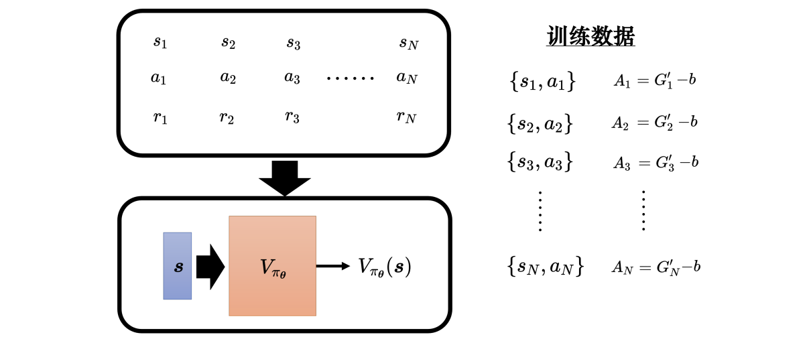
学习出 Critic \(V^{\pi_{\theta}}\) 后，给定一个状态 \(s\)，其可以产生分数 \(V^{\pi_{\theta}}(s)\)，基线 \(b\) 可设成 \(V^{\pi_{\theta}}(s)\)，因此 \(A\) 可设成 \(G' − V^{\pi_{\theta}}\)
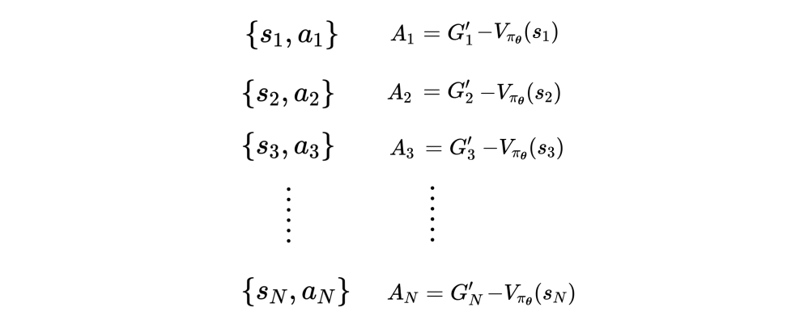
\(A_t\) 代表 \(\{s_t , a_t\}\) 的好坏，智能体看到某一个画面 \(s_t\) 以后，接下来再继续玩游戏，游戏有随机性，每次得到的奖励都不太一样，\(V^{\pi_\theta}(s_t)\) 是一个期望值
- Actor 的输出是动作的空间上的概率分布，给每一个动作一个分数，按照这个分数去做采样。
- 有些动作被采样到的概率高，有些动作被采样到的概率低，但每一次采样出来的动作，并不保证一定要是一样的，可以计算出不同的累积奖励。
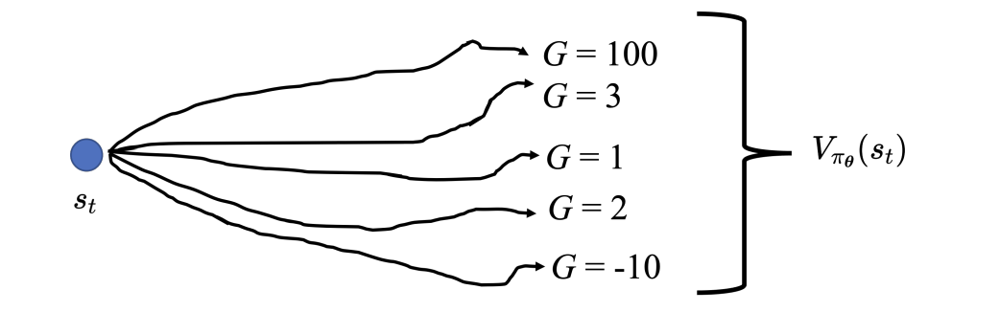
Bug
\(G'_t\) 是一个采样的结果，它是执行 \(a_t\) 以后，一直玩到游戏结束的结果，而 \(V^{\pi_\theta}\) 是很多个可能性平均以后的结果。用一个采样减掉平均，其实不太准，这个采样可能特别好或特别坏。所以其实可以用平均去减掉平均，即 Advantage Actor-Critic
14.7 Advantage Actor-Critic¶
Background
- 训练出 Critic 后，可以把 baseline 设成价值函数：
- 于是动作评价可以写成：
- 含义：
- \(G'_t\)：在 \(s_t\) 执行动作 \(a_t\) 后，实际采样到的未来回报
- \(V^{\pi_\theta}(s_t)\)：在 \(s_t\) 按照当前策略随机行动时，未来回报的平均水平
如果 \(A_t>0\)，说明 \(a_t\) 比当前策略平均会采取的动作更好；如果 \(A_t<0\)，说明 \(a_t\) 比平均动作更差。
但 \(G'_t\) 是单次采样结果，方差较大。于是可以用 TD 的想法，把 \(G'_t\) 换成：\(r_t+\gamma V^{\pi_\theta}(s_{t+1})\)
- 得到 优势 Actor-Critic（Advantage Actor-Critic，A2C）：
这表示：
- 在 \(s_t\) 执行 \(a_t\) 后，先得到即时奖励 \(r_t\)
- 接着到达 \(s_{t+1}\)，未来期望价值为 \(V^{\pi_\theta}(s_{t+1})\)
- 再减去原本状态 \(s_t\) 的平均价值，得到该动作相对于平均动作的优势
Actor-Critic 的训练技巧
- Actor 和 Critic 都是一个网络，Actor 的输入是游戏画面，其输出是每一个动作的分数。Critic 的输入是游戏画面，输出是一个数值，代表接下来会得到的累积奖励。
- 图中两个网络的输入相同，所以这两个网络应该可以共用参数，假设输入非常复杂（比如游戏画面），前面几层都需要使用 CNN，所以 Actor 和 Critic 可以共用前面几个层
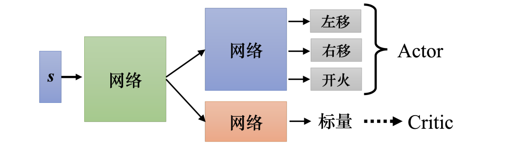
14.8 Other RL Methods¶
除了策略梯度和 Actor-Critic，还有许多强化学习方法：
- DQN（Deep Q-Network）：直接用 Critic 估计动作价值，并选择价值高的动作
- Rainbow：整合多种 DQN 改进方法
- Imitation Learning：通过模仿专家行为辅助学习
- Visual Reinforcement Learning：直接根据图像观测学习控制策略
强化学习的核心难点可以总结为：
- 奖励可能稀疏且延迟
- 采样成本高
- 训练数据分布会随策略改变
- 探索和利用（exploration vs. exploitation）需要平衡
- 价值估计常常存在高方差或偏差